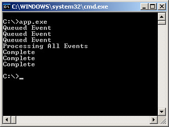
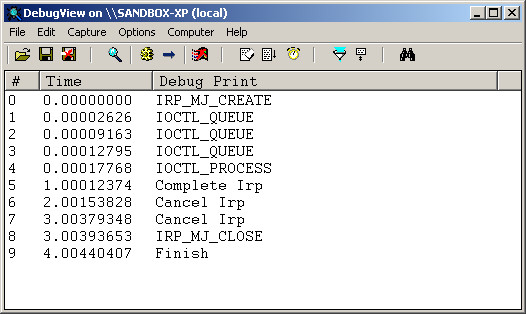

參考資訊：
https://wasm.in/
http://four-f.narod.ru/
https://github.com/steward-fu/ddk
http://www.delphibasics.info/home/delphibasicsprojects/delphidriverdevelopmentkit
main.pas
unit main;
interface
uses
DDDK;
const
DEV_NAME = '\Device\MyDriver';
SYM_NAME = '\DosDevices\MyDriver';
// CTL_CODE(FILE_DEVICE_UNKNOWN, 0x800, METHOD_BUFFERED, FILE_ANY_ACCESS)
IOCTL_QUEUE = $222000;
// CTL_CODE(FILE_DEVICE_UNKNOWN, 0x801, METHOD_BUFFERED, FILE_ANY_ACCESS)
IOCTL_PROCESS = $222004;
function _DriverEntry(pMyDriver : PDriverObject; pMyRegistry : PUnicodeString) : NTSTATUS; stdcall;
implementation
var
dpc : TKDpc;
obj : KTIMER;
queue : LIST_ENTRY;
procedure OnTimer(Dpc : KDPC; DeferredContext : Pointer; SystemArgument1 : Pointer; SystemArgument2 : Pointer); stdcall;
var
irp : PIRP;
plist : PLIST_ENTRY;
begin
if IsListEmpty(@queue) = True then begin
KeCancelTimer(@obj);
DbgPrint('Finish', []);
end else begin
plist := RemoveHeadList(@queue);
// CONTAINING_RECORD(IRP.Tail.Overlay.ListEntry)
irp := Pointer(Integer(plist) - 88);
if irp^.Cancel = False then begin
irp^.IoStatus.Status := STATUS_SUCCESS;
irp^.IoStatus.Information := 0;
IoCompleteRequest(irp, IO_NO_INCREMENT);
DbgPrint('Complete Irp', []);
end else begin
irp^.CancelRoutine := Nil;
irp^.IoStatus.Status := STATUS_CANCELLED;
irp^.IoStatus.Information := 0;
IoCompleteRequest(irp, IO_NO_INCREMENT);
DbgPrint('Cancel Irp', []);
end;
end;
end;
function IrpOpen(pMyDevice : PDeviceObject; pIrp : PIrp) : NTSTATUS; stdcall;
begin
DbgPrint('IRP_MJ_CREATE', []);
Result := STATUS_SUCCESS;
pIrp^.IoStatus.Information := 0;
pIrp^.IoStatus.Status := Result;
IoCompleteRequest(pIrp, IO_NO_INCREMENT);
end;
function IrpClose(pMyDevice : PDeviceObject; pIrp : PIrp) : NTSTATUS; stdcall;
begin
DbgPrint('IRP_MJ_CLOSE', []);
Result := STATUS_SUCCESS;
pIrp^.IoStatus.Information := 0;
pIrp^.IoStatus.Status := Result;
IoCompleteRequest(pIrp, IO_NO_INCREMENT);
end;
function IrpIOCTL(pMyDevice : PDeviceObject; pIrp : PIrp) : NTSTATUS; stdcall;
var
code : ULONG;
tt : LARGE_INTEGER;
psk : PIoStackLocation;
begin
psk := IoGetCurrentIrpStackLocation(pIrp);
code := psk^.Parameters.DeviceIoControl.IoControlCode;
case code of
IOCTL_QUEUE: begin
DbgPrint('IOCTL_QUEUE', []);
InsertHeadList(@queue, @pIrp^.Tail.Overlay.s1.ListEntry);
IoMarkIrpPending(pIrp);
Result := STATUS_PENDING;
exit
end;
IOCTL_PROCESS: begin
DbgPrint('IOCTL_PROCESS', []);
tt.HighPart := tt.HighPart or -1;
tt.LowPart := ULONG(-10000000);
KeSetTimerEx(@obj, tt.LowPart, tt.HighPart, 1000, @dpc);
end;
end;
Result := STATUS_SUCCESS;
pIrp^.IoStatus.Information := 0;
pIrp^.IoStatus.Status := Result;
IoCompleteRequest(pIrp, IO_NO_INCREMENT);
end;
procedure Unload(pMyDriver : PDriverObject); stdcall;
var
szSymName : TUnicodeString;
begin
RtlInitUnicodeString(@szSymName, SYM_NAME);
IoDeleteSymbolicLink(@szSymName);
IoDeleteDevice(pMyDriver^.DeviceObject);
end;
function _DriverEntry(pMyDriver : PDriverObject; pMyRegistry : PUnicodeString) : NTSTATUS; stdcall;
var
szDevName : TUnicodeString;
szSymName : TUnicodeString;
pMyDevice : PDeviceObject;
begin
RtlInitUnicodeString(@szDevName, DEV_NAME);
RtlInitUnicodeString(@szSymName, SYM_NAME);
IoCreateDevice(pMyDriver, 0, @szDevName, FILE_DEVICE_UNKNOWN, 0, FALSE, pMyDevice);
pMyDriver^.MajorFunction[IRP_MJ_CREATE] := @IrpOpen;
pMyDriver^.MajorFunction[IRP_MJ_CLOSE] := @IrpClose;
pMyDriver^.MajorFunction[IRP_MJ_DEVICE_CONTROL] := @IrpIOCTL;
pMyDriver^.DriverUnload := @Unload;
pMyDevice^.Flags := pMyDevice^.Flags or DO_BUFFERED_IO;
pMyDevice^.Flags := pMyDevice^.Flags and not DO_DEVICE_INITIALIZING;
InitializeListHead(@queue);
KeInitializeTimer(@obj);
KeInitializeDpc(@dpc, OnTimer, pMyDevice);
Result := IoCreateSymbolicLink(@szSymName, @szDevName);
end;
end.
app.pas
program main;
{$APPTYPE CONSOLE}
uses
forms,
dialogs,
windows,
classes,
messages,
sysutils,
variants,
graphics,
controls;
const
METHOD_BUFFERED = 0;
METHOD_IN_DIRECT = 1;
METHOD_OUT_DIRECT = 2;
METHOD_NEITHER = 3;
FILE_ANY_ACCESS = 0;
FILE_DEVICE_UNKNOWN = $22;
var
fd : DWORD;
ret : DWORD;
cnt : DWORD;
code: DWORD;
ov : array [0..2] of OVERLAPPED;
begin
fd := CreateFile('\\.\MyDriver', GENERIC_READ or GENERIC_WRITE, FILE_SHARE_READ, Nil, OPEN_EXISTING, FILE_FLAG_OVERLAPPED or FILE_ATTRIBUTE_NORMAL, 0);
for cnt := 0 to 2 do begin
ov[cnt].hEvent := CreateEvent(Nil, TRUE, FALSE, Nil);
code := (FILE_DEVICE_UNKNOWN shl 16) or (FILE_ANY_ACCESS shl 14) or ($800 shl 2) or (METHOD_BUFFERED);
WriteLn(Output, 'Queued event');
DeviceIoControl(fd, code, Nil, 0, Nil, 0, ret, @ov[cnt]);
end;
code := (FILE_DEVICE_UNKNOWN shl 16) or (FILE_ANY_ACCESS shl 14) or ($801 shl 2) or (METHOD_BUFFERED);
WriteLn(Output, 'Processing All Events');
DeviceIoControl(fd, code, Nil, 0, Nil, 0, ret, Nil);
Sleep(1000);
CancelIo(fd);
for cnt := 0 to 2 do begin
WaitForSingleObject(ov[cnt].hEvent, INFINITE);
CloseHandle(ov[cnt].hEvent);
WriteLn(Output, 'Complete');
end;
CloseHandle(fd);
end.
完成

